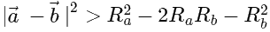
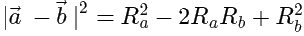
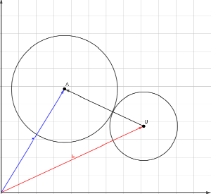
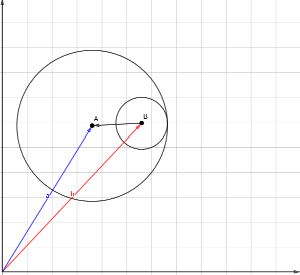
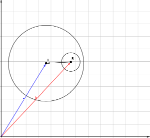
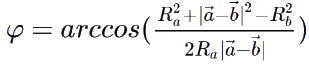

Взаимное расположение двух окружностей. Теория
Определение взаимного расположения двух окружностей
Пусть окружности заданы вектором от начала координат к центру и радиусом этой окружности.
Рассмотрим окружности A и B с радиусами Ra и Rb и радиус-векторами(вектор к центру) a и b. При этом Oa и Ob - их центры. Без ограничения общности рассуждения, будем считать, что Ra > Rb.

Тогда выполняются следующие условия:
Окружности не пересекаются друг с другом и расположены внешним образом, если: (рис. 1)

Окружности касаются друг друга внешним образом, если: (рис. 2)

Окружности пересекаются в двух точках, если: (рис. 3)
Окружности касаются друг друга внутренним образом, если: (рис. 4)
Одна окружность содержит другую, если: (рис. 5)


Рис. 1. Отсутствие пересечений и внешнее расположение двух окружностей
Рис. 2. Касание двух окружностей внешним образом
Рис. 3. Пересечение двух окружностей в двух точках
Рис. 4. Касание двух окружностей внутренним образом
Рис. 5. Отсутствие пересечений и внутреннее расположение двух окружностей
Задача 1: Особняки важных вельможТочки пересечения двух окружностей
Предположим, A и B пересекаются в двух точках. Найдем эти точки пересечения.
Для этого вектор от a до точки P, которая лежит на окружности A и лежит на OaOb. Для этого надо взять вектор b - a, который и будет являтся вектором между двумя центрами, нормализовать (заменить на сонаправленный единичный вектор) и умножить на Ra. Получившийся вектор обозначим как p. Эту конфигурацию можете видеть на рис. 6


Рис. 6. Вектора a,b,p и где они обитают.
Обозначим i1 и i2 как вектора от a до точек пересечения I1 и I2 двух окружностей. Становится очевидно, что i1 и i2 получаются поворотом из p. Т.к. нам известны все стороны треугольников OaI1Ob и OaI2Ob (Радиусы и расстояние между центрами), мы можем получить этот угол fi, поворот на которого вектор p в одну сторону даст I1, а в другую I2.
По теореме косинусов, он равен:
Если повернуть p на fi, то получится i1 или i2, взависимости от того, в какую сторону поворачивать. Далее вектор i1 или же i2 надо сложить с a для получения точки пересечения
Этот метод сработает даже если центр одной окружности лежит внутри другой. Но там точно вектор p придется задавать в направлении от a к b, что мы и делали. Если строить p, опираясь на другую окружность, то тогда ничего не выйдет
Ну и в заключение ко всему надо упоминуть один факт: если окружности касаются, то несложно убедится, что P и есть точка касания (это верно и для внутреннего, и для внешнего касания)
Задача 2: Точки пересеченияЭтот метод рабочий, но вместо угла поворота можно вычислить его косинус, а через него синус, после чего использовать уже их при повороте вектора. Это существенно упростит вычисления, избавив код от тригонометрических функций.